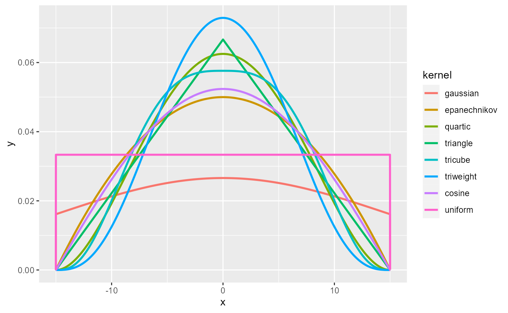
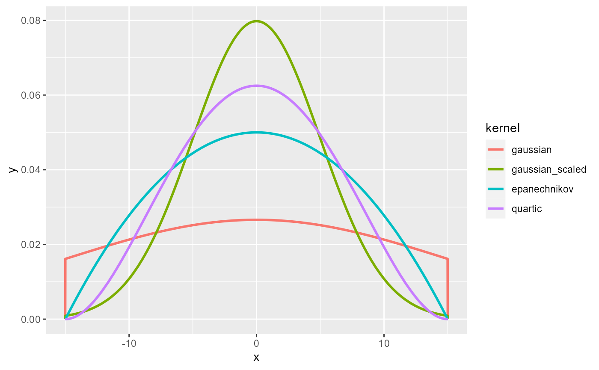
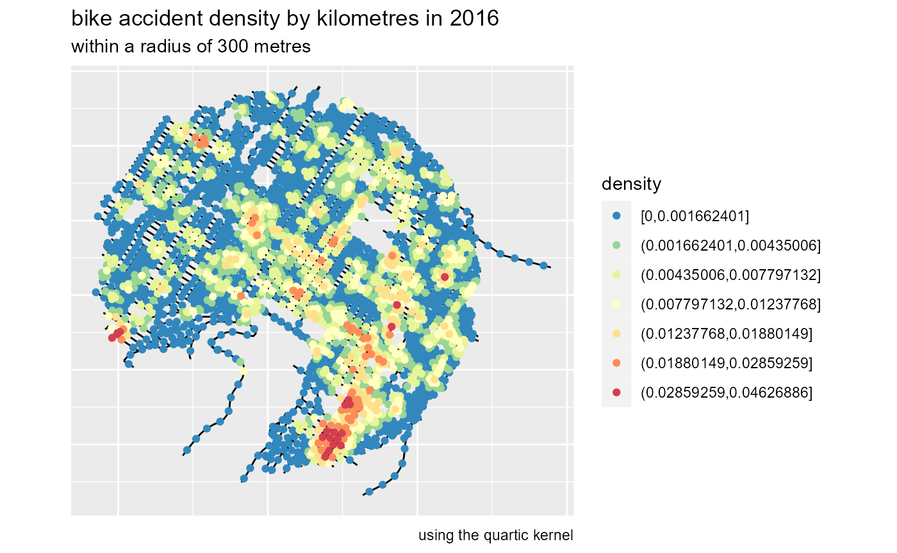
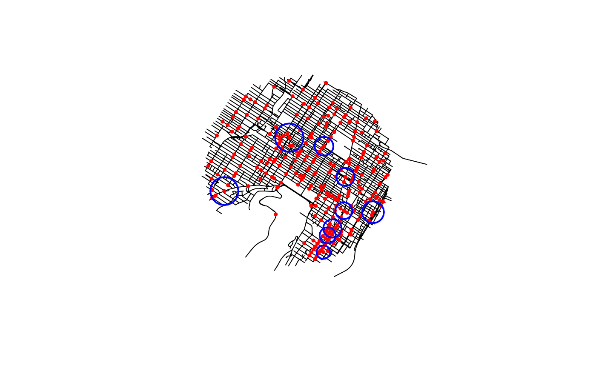
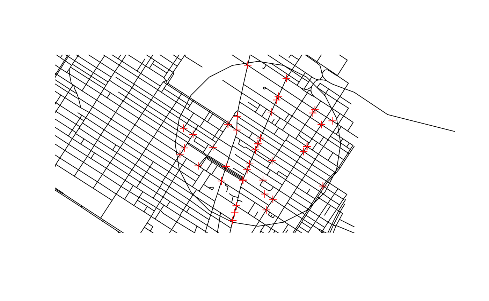

Quick introduction to NKDE
A classical Kernel Density Estimate (KDE) estimates the continuous density of a set of events in a two-dimensional space. The density is estimated at sampling points, traditionally the centres of pixels dividing the study area into equal zones.
This approach is not adapted to analyze density of events occurring on a network, like accidents and crimes in streets, or leaks on a network of water pipes. Indeed, calculating density values for locations outside the network is meaningless and the Euclidean distance underestimates the real distance between two objects on the network. Moreover, networks are not isotropic spaces. In other words, it is not possible to move in every direction, but only along the edges of the network.
To calculate a Network Kernel Density Estimate (NKDE), it is possible to:
- use lixels instead of pixels. A lixel is a linear equivalent of a pixel on a network. The lines of the network are split into lixels according to a chosen resolution. The centres of the lixels are sampling points for which the density will be estimated.
- calculate network distances between objects instead of Euclidean distances.
- adjust the kernel function to deal with the anisotropic space
A picture is worth a thousand of words, so let us consider this situation:

Each red point is an event and the lines constitute the network. One could calculate a simple KDE on that dataset and would obtain something like this:
But this is only partially satisfying if we are interested in the density of the events on the network.
To perform a NKDE, the events must be snapped on the network. The snapped events are shown here in green.
The mass of each event can be seen as a third dimension and is evaluated by a selected kernel function (K) within a specified bandwidth. The kernel function must satisfy the following conditions:
\(K(x) >= 0 \text{, if } x < bandwidth\)
\(K(x) = 0 \text{, if } x > bandwidth\)
\(\int K(x)= 1\)
The total mass of an event is 1, and is spread according to the function K within the bandwidth.
For an easier representation, let us consider here the triangle kernel function.

We can see that the “influence” of each point is limited within the bandwidth and decreases when we move away from the event.
With this method, one can evaluate the density of the studied phenomenon at each location on the network. In the next figure, 3 sampling points (s1, s2 and s3) are added in blue.

\[d_{s1} = \frac{1}{bw^2}K(dist_{s1;e1})\] \[d_{s2} = \frac{1}{bw^2}K(dist_{s2;e2})\] \[d_{s3} = \frac{1}{bw^2}(K(dist_{s3;e2}) + K(dist_{s3;e3}))\]
And in a more general fashion: \(d_{si} = \frac{1}{bw^2} \sum_{j=1}^{n} K(dist_{si;ej})\) with \(d_{si}\) the density estimated at the sample point si, bw the bandwidth and ej an event.
The proposed kernel functions in the spNetwork package are:
gaussian kernel: \(k(\dfrac{d_{il}}{r})=\dfrac{1}{\sqrt{2\pi}} * \exp(-\dfrac{d_{il}^2}{2r^2})\)
quartic kernel: \(k(\dfrac{d_{il}}{r})=\dfrac{3}{\pi} * (1-\dfrac{d_{il}^2}{r^2})\)
epanechnikov kernel: \(k(\dfrac{d_{il}}{r})=\dfrac{3}{4}*(1-\dfrac{d_{il}^2}{r^2})\)
triangle kernel: \(k(\dfrac{d_{il}}{r})= 1 - |\dfrac{d_{il}}{r}|\)
uniform kernel: \(k(\dfrac{d_{il}}{r})= |\dfrac{1}{r}|\)
triweight kernel: \(k(\dfrac{d_{il}}{r})= \dfrac{35}{32} * (1-\dfrac{d_{il}}{r}^2)^3\)
tricube kernel: \(k(\dfrac{d_{il}}{r})= \dfrac{70}{81} * (1-|\dfrac{d_{il}}{r}|^3)^3\)
cosine kernel: \(k(\dfrac{d_{il}}{r})= \dfrac{\pi}{4} * (cos(\dfrac{\pi}{2}*\dfrac{d_{il}}{r}))\)
with r the bandwidth, and \(d_{il}\) the distance between an event and the sampling point.
library(ggplot2)
library(reshape2)
library(kableExtra)
library(spNetwork)
x <- seq(-15.01,15.01,by = 0.01)
df <- data.frame(
x = x,
gaussian = gaussian_kernel(x,15),
epanechnikov = epanechnikov_kernel(x,15),
quartic = quartic_kernel(x,15),
triangle = triangle_kernel(x,15),
tricube = tricube_kernel(x,15),
triweight = triweight_kernel(x,15),
cosine = cosine_kernel(x,15),
uniform = uniform_kernel(x,15))
df2 <- melt(df, id.vars = "x")
names(df2) <- c("x","kernel","y")
ggplot(df2) +
geom_line(aes(x=x,y=y,color=kernel),size=1)
As one can see, most of the kernels look alike. It is worth mentioning that the gaussian kernel does not integrate to 1 within the bandwidth (specific case of non-compact kernel). In the spNetwork package, all kernel values beyond the bandwidth are set to 0. This means that some mass of each event is lost with the gaussian kernel. To limit this effect, one can use the scaled version of the gaussian kernel for which the bandwidth is divided by 3, limiting greatly the mass loss.
Funs <- c(gaussian_kernel, gaussian_kernel_scaled,epanechnikov_kernel,
quartic_kernel,triangle_kernel, uniform_kernel,
tricube_kernel,triweight_kernel,
cosine_kernel)
Names <- c("gaussian", "scaled gaussian", "epanechnikov", "quartic",
"triangle","uniform", "tricube", "triweight", "cosine")
integrals <- sapply(Funs,function(f){
return(round(integrate(f,upper=15,lower=-15,bw=15)$value,3))
})
df <- data.frame("kernel"=Names,
"integrals" = integrals)
kable(df)| kernel | integrals |
|---|---|
| gaussian | 0.683 |
| scaled gaussian | 0.997 |
| epanechnikov | 1.000 |
| quartic | 1.000 |
| triangle | 1.000 |
| uniform | 1.000 |
| tricube | 1.000 |
| triweight | 1.000 |
| cosine | 1.000 |
However, the fact that the gaussian kernel does not integrate to 1 within the bandwidth can leads to negative values when using the continuous NKDE (presented latter). Thus, we recommend using the quartic kernel instead.
x <- seq(-15.01,15.01,by = 0.01)
df <- data.frame(
x = x,
gaussian = gaussian_kernel(x,15),
gaussian_scaled = gaussian_kernel_scaled(x,15),
epanechnikov = epanechnikov_kernel(x,15),
quartic = quartic_kernel(x,15)
)
df2 <- melt(df, id.vars = "x")
names(df2) <- c("x","kernel","y")
ggplot(df2) +
geom_line(aes(x=x,y=y,color=kernel),size=1)
The three versions of NKDE
The spNetwork package provides three methods to calculate NKDE. We present them briefly here. For more details, please read the original papers and books cited. An other vignette is also available (Details about NKDE) to explore the three of them in 3D plots.
Simple method
The first method was proposed by Xie and Yan (2008). Considering the planar KDE, they defined the NKDE with the following formula:
\(d_{si} = \frac{1}{bw}\sum_{j=1}^{n} K(dist_{si;ej})\)
with \(d_{si}\) the density estimated at sample the point si, \(dist_{si;ej}\) the network distance between si and event j, with all distances \(dist_{si;ej} < bw\).
Of course, it uses the network distance instead of the Euclidean distance. This method is appealing because it is intuitive, but it is not statistically satisfying. Note that the divisor of the kernel is not the classical \(\frac{1}{bw^2}\), but \(\frac{1}{bw}\). This adjustment allows for a simpler interpretation of the density: “Instead of calculating the density over an area unit, the equation estimates the density over a linear unit” (Xie and Yan 2008, 398)
In the next figure, we show in 3D what that kernel looks like. The red point is a simple event, the black lines are the network, and the blue lines are the calculated densities.
As one can see, this NKDE is only determined by the distance between the sampling points and the event. This is a problem because at intersections, the event’s mass is multiplied by the number of edges at that intersection. Consequently, this is not a true kernel because it does not integrate to 1 on its domain.
This method remains useful for two reasons:
- For quick data visualization. With big datasets, it might be useful to use this simple method to do a primary investigation.
- In a purely geographical view, this method is intuitive. In the case of crime analysis for example, one could argue that the strength of an event should not be affected by intersections on the network. In that case, the kernel function is seen as a distance decaying function.
What to retain about the simple method ?
| Pros | Cons |
|---|---|
| quick to calculate | biased (not a true kernel) |
| intuitive | overestimate the densities |
| continuous |
Discontinuous NKDE
Okabe and Sugihara (2012) have criticized the previous method, arguing that the produced density estimator is biased, conducting to overestimation of density. To overcome this limit, they presented two heuristic techniques: the discontinuous and the continuous NKDE.
The discontinuous NKDE is easily presented by a figure:
The density of the kernel function is equally divided at intersections. Note that spNetwork implements the modified version proposed by Sugihara, Satoh, and Okabe (2010), allowing for use in networks with cycles. In the case of a cycle, the multiple overlapping values of the kernel are added, as shown in the next figure.
With the case presented before, we obtain the following result.

As one can see, the values of the NKDE are split at intersections to avoid the multiplication of the mass observed in the simple version. However, this creates a discontinuous NKDE, which is counter-intuitive. It leads to sharp differences between density values in the network, and could be problematic in networks with many intersections.
What to retain about the discontinuous method ?
| Pros | Cons |
|---|---|
| quick to calculate | counter-intuitive |
| unbiased | discontinuous |
| contrasted results |
Continuous NKDE
If the previous method is an unbiased estimator and quite easy to calculate, its discontinuous nature might be counter-intuitive in comparison with the simple method. The continuous NKDE merges the best of the two worlds: it adjusts the values of the NKDE at intersections to ensure that it integrates to 1 on its domain, and applies a backward correction to force the density values to be continuous. This process is accomplished by a recursive function, described in the book Spatial Analysis Along Networks (Okabe and Sugihara 2012). This function is more time consuming, so it might be necessary to stop it when the recursion is too deep. Considering that the kernel density is divided at each intersection, stopping the function at deep level 16 should give results almost identical to the true values.
There are three different equations to calculate the kernel density depending on the situation (here, q1, q2, q3).
Again, with the case presented before, we obtain the following result.
As one can see, the values of the NKDE are continuous, and the density values close to the events have been adjusted. This leads to smoother results than the discontinuous method.
What to retain about the discontinuous method
| Pros | Cons |
|---|---|
| unbiased | long calculation time |
| continuous | smoother values |
NKDE in spNetwork
The spNetwork package makes this type of analysis straightforward in R. The main problem of the implementation of the NKDE is to reduce computation time. Indeed, for a large dataset, building the network and evaluating the distances between each event and each sampling point would be too long and could lead to memory issues.
To avoid this, the first solution provided in spNetwork is a gridded application of the NKDE. The user can split the study area with a grid, the calculation is then performed in each cell of the grid. A buffer is applied on each cell to avoid frontier effect. This behaviour is controlled by the parameter grid_shape, indicating the shape of the grid. To split the study area in four rectangles, one can use grid_shape = c(2,2). For a reasonable dataset, it is also possible not to split the study area with grid_shape = c(1,1).
# first load data and packages
library(sp)
library(maptools)
library(rgeos)
library(spNetwork)
library(raster)
networkgpkg <- system.file("extdata", "networks.gpkg",
package = "spNetwork", mustWork = TRUE)
eventsgpkg <- system.file("extdata", "events.gpkg",
package = "spNetwork", mustWork = TRUE)
mtl_network <- rgdal::readOGR(networkgpkg,layer="mtl_network",verbose = FALSE)
bike_accidents <- rgdal::readOGR(eventsgpkg,layer="bike_accidents", verbose = FALSE)
# then plotting the data
plot(mtl_network)
plot(bike_accidents,add=T,col='red',pch = 19)
# then calculating some lixels to use as sampling points
lixels <- lixelize_lines(mtl_network,200,mindist = 50)
samples <- lines_center(lixels)
# then applying the NKDE
densities <- nkde(mtl_network,
events = bike_accidents,
w = rep(1,nrow(bike_accidents)),
samples = samples,
kernel_name = "quartic",
bw = 300, div= "bw",
method = "discontinuous", digits = 1, tol = 1,
grid_shape = c(1,1), max_depth = 8,
agg = 5, #we aggregate events within a 5m radius (faster calculation)
sparse = TRUE,
verbose = FALSE)
samples$density <- densitiesWe can now map the density values estimated for each lixel centre:
library(ggplot2)
library(dplyr)
library(RColorBrewer)
library(classInt)
# rescaling to help the mapping
samples$density <- samples$density*1000
# using a discretization method
breaks <- classIntervals(samples$density, n = 7, style = "jenks", intervalClosure = "right")
colorRamp <- brewer.pal(n = 7, name = "Spectral")
colorRamp <- rev(colorRamp)
samples$class <- as.character(cut(samples$density,breaks$brks,colorRamp,include.lowest =TRUE))
xy <- coordinates(samples)
samples$x <- xy[,1]
samples$y <- xy[,2]
# and finally map with ggplot
labels <- names(print(breaks))
#> style: jenks
#> [0,0.001662401] (0.001662401,0.00435006] (0.00435006,0.007797132]
#> 1554 656 462
#> (0.007797132,0.01237768] (0.01237768,0.01880149] (0.01880149,0.02859259]
#> 269 145 57
#> (0.02859259,0.04626886]
#> 19
mtl_network$line_id <- 1:nrow(mtl_network)
Mapnetwork <- fortify(mtl_network,id="line_id")
df <- samples@data[order(samples@data$density),]
ggplot() +
geom_path(data = Mapnetwork, mapping = aes(x=long,y=lat,group=group), color="black")+
geom_point(data = df, mapping = aes(x=x,y=y,color=class))+
scale_color_manual("density",
breaks = colorRamp, values = colorRamp,
label = labels)+
theme(axis.title.x=element_blank(),
axis.text.x=element_blank(),
axis.ticks.x=element_blank(),
axis.title.y=element_blank(),
axis.text.y=element_blank(),
axis.ticks.y=element_blank()) +
coord_fixed()+
labs(title = "bike accident density by kilometres in 2016",
subtitle = "within a radius of 300 metres",
caption = "using the quartic kernel")
As you can imagine it remains a costly process, especially for the continuous kernel. The package spNetwork uses three approaches simultaneously to reduce calculation time:
- ‘Rcpp’: the main functions are coded with C++
- ‘Armadillo’: the linear algebra is performed with the ‘RcppArmadillo’ package
- multiprocessing: it is possible to split the calculation on multiple cores
The calculus of the NKDE for each cell could be done by several cores. To do so, spNetwork provides a function nkde.mc. More specifically, it uses functions from the packages future and future.apply. The selection of the plan has to be done by the user to ensure the best compatibility on each os and computer. See the documentation of the future package if needed.
The following code will produce the same results as before but split the work between two cores.
# setting the multisession plan
future::plan(future::multisession(workers=2))
# then applying the NKDE
densities_mc <- nkde.mc(mtl_network,
events = bike_accidents,
w = rep(1,nrow(bike_accidents)),
samples = samples,
kernel_name = "quartic",
bw = 300, div= "bw",
method = "discontinuous", digits = 1, tol = 1,
grid_shape = c(2,2), # splitting the study area in 4 rectangles
max_depth = 8,
agg = 5, #we aggregate events within a 5m radius
sparse = TRUE,
verbose = FALSE)
# let's set back the classical sequential plan
if (!inherits(future::plan(), "sequential")) future::plan(future::sequential)An example with adaptive bandwidth
The examples provided in the previous sections are using only a fixed bandwidth. If we relax the need for a fixed bandwidth, we obtain an adaptive estimator. In other words, the bandwidth may vary in the study area. spNetwork uses the method proposed by Abramson (1982), implying a variation of the bandwidth that is inversely proportional to the square root of the target density itself. In other words, at places where the density of the spatial process is high, the bandwidth of the kernel will be smaller and inversely. The use of an adaptive bandwidth has many theoretical and practical advantages. First, it reduces the sensibility to outliers. Second, it reduces smoothing in sub-region with many events (giving more detailed density estimation) and increases the smoothing in sub-region with few events (giving fuzzier results because of the higher uncertainty).
The problem is that the true density itself is unknown (otherwise we would not have to estimate it with a smoothing method). To obtain the adaptive bandwidth, a three steps method is used :
- A fixed reference bandwidth (\(h_{0}\)) is selected. For each event (\(e_{i}\)) on the network, the density of the spatial process is evaluated by using this reference bandwidth (\(\tilde{f}h_{0}(e_{i})\)).
- For each event, the adaptive bandwidth is calculated with the following formula. A trimming value can be defined to limit the maximum of the calculated adaptive bandwidths.
- The densities at sampling points are then evaluated by using the obtained vector of bandwidth for each event.
\[ h(e_{i}) = h_{0} * \frac{1}{\sqrt{\tilde{f}h_{0}(e_{i})}} * \frac{1}{\gamma_{f}}\\ \gamma_{f} = \exp(\frac{\sum_{i}log(\frac{1}{\sqrt{\tilde{f}h_{0}(e_{i})}})}{n}) \]
This method is called event oriented, because the new bandwidths are evaluated for the events rather than the sampling points. The sample oriented method is not implemented because not compatible with the internal structure of spNetwork. Moreover, the event oriented density has an interesting advantage: adding more sampling points to have a more detailed density estimation has only a little impact on calculation time.
In spNetwork, when an adaptive bandwidth is used, the calculated bandwidth for each event is returned too.
Let us calculate a new NKDE, but with an adaptive bandwidth.
adapt_densities <- nkde(mtl_network,
events = bike_accidents,
w = rep(1,nrow(bike_accidents)),
samples = samples,
kernel_name = "quartic",
bw = 300, div= "bw",
adaptive = TRUE, # we use here an adaptive bandwidth
trim_bw = 600, # the maximum local values of bandwidth will be 600m
method = "discontinuous", digits = 1, tol = 1,
grid_shape = c(1,1), max_depth = 16,
agg = 5, #we aggregate events within a 5m radius (faster calculation)
sparse = TRUE,
verbose=FALSE)
samples$density <- adapt_densities$k
samples$density <- adapt_densities$kWe can now map some of the bandwidths
circles <- gBuffer(adapt_densities$events,byid = TRUE,width = adapt_densities$events$bw)
ids <- c(1,52,20,86,14,75,126,200,177)
plot(mtl_network)
plot(bike_accidents,add=T,col='red',pch = 19,cex=0.5)
plot(circles[ids,],add=T,border='blue',lwd=2)
And map the new densities with the same code as before.
#> style: jenks
#> [0,0.002095183] (0.002095183,0.005201574] (0.005201574,0.00924476]
#> 1744 737 334
#> (0.00924476,0.01517735] (0.01517735,0.02449563] (0.02449563,0.0398348]
#> 189 114 30
#> (0.0398348,0.07519629]
#> 14
Applying a correction factor to avoid edge effects
When the study area is bounded, the kernel density estimate is biased at the border because the events at the other side of the border are not sampled. To mitigate the induced bias, one could apply the Diggle correction factor.
\[d(u) = \sum_{i=1}^{n}\frac{1}{e(x_{i})}K(dist(u-x_{i}))\\e(u) = \int_{W}{K(dist(u,v))}\] The correction factor \(e(u)\) is calculated for each event for which a part of its mass is outside the study area. More precisely, \(e(x_{i})\) is the percentage of the mass of the event \(x_i\) located inside the study area. The kernel function could be the simple, the continuous or the discontinuous. This correction factor can be used with the adaptive bandwidth too. Note that this correction is usable only if the network outside the study_area is available.
Let us illustrate it here by using a sub part of the same data
# selecting the events in a subset of the data
center_event <- bike_accidents[125,]
study_area <- rgeos::gBuffer(center_event,width = 800)
events_sel <- as.vector(rgeos::gIntersects(bike_accidents, study_area,byid=TRUE))
events <- subset(bike_accidents,events_sel)
# generating the sampling points
lines_sel <- as.vector(rgeos::gIntersects(mtl_network, study_area,byid=TRUE))
lines <- subset(mtl_network,lines_sel)
lixels <- lixelize_lines(lines,200,mindist = 50)
samples <- lines_center(lixels)
sp::plot(study_area,col="white")
sp::plot(mtl_network,add=TRUE)
sp::plot(events,add=TRUE, col="red")
# calculating the NKDE values, adjusted
adjusted_densities <- nkde(lines = mtl_network,
events = events,
w = rep(1,nrow(events)),
samples = samples,
kernel_name = "quartic",
bw = 150,
adaptive = FALSE,
method = "discontinuous",
div = "bw",
diggle_correction = TRUE, study_area = study_area,
max_depth = 15,
digits = 2,tol = 0.1,agg = 5,sparse = TRUE,
grid_shape = c(1,1),verbose = FALSE)
samples$density <- adjusted_densities
samples$density <- adjusted_densitiesAnd again, we can map the results.
#> style: jenks
#> [0,0.005012002] (0.005012002,0.01542759] (0.01542759,0.02911514]
#> 296 56 53
#> (0.02911514,0.0439638] (0.0439638,0.06249475] (0.06249475,0.08333333]
#> 16 17 3
#> (0.08333333,0.1515667]
#> 3
Bandwidth selection
The bandwidth is the most important parameter when doing kernel density estimate. Many methods have been proposed to find an optimal bandwidth but all of them are either crude approximations or require large calculus time. In that context, selecting a theory based bandwidth is recommended. However, spNetwork provides currently two functions to do data driven bandwidth selection:
-
bw_cv_likelihood_calc, using likelihood cross validation by leave one out. The idea is to find a bandwidth that will produce the most similar results if an event is dropped. -
bw_cvl_calc, using the Cronie and Van Lieshout’s Criterion (Cronie and Van Lieshout 2018). The goal is to minimize the difference between the size of the observation window and the sum of the reciprocal of the estimated kernel density at the events locations. In the network case, the size of the study area is the sum of the length of each line in the network. Thus, it is important to only use the relevant parts of the network.
For both, one can uses the multicore version of the functions to speed up the calculation. It is also possible to run it on a subset of the dataset (based on the spatial grid) if running time is too long.
bws_selection_cv <- bw_cv_likelihood_calc(
bw_range = c(200,700),bw_step = 50,
lines = mtl_network, events = bike_accidents,
w = rep(1,nrow(bike_accidents)),
kernel_name = "quartic", method = "discontinuous",
diggle_correction = FALSE, study_area = NULL,
max_depth = 8,
digits=2, tol=0.1, agg=5,
sparse=TRUE, grid_shape=c(1,1),
verbose=FALSE, check=TRUE)
bws_selection_cvl <- bw_cvl_calc(
bw_range = c(200,700),bw_step = 50,
lines = mtl_network, events = bike_accidents,
w = rep(1,nrow(bike_accidents)),
kernel_name = "quartic", method = "discontinuous",
diggle_correction = FALSE, study_area = NULL,
max_depth = 8,
digits=2, tol=0.1, agg=5,
sparse=TRUE, grid_shape=c(1,1),
verbose=FALSE, check=TRUE)
cv_values <- data.frame(
"bw" = bws_selection_cv$bw,
"cv_likelihood" = bws_selection_cv$cv_scores,
"cvl_crit" = bws_selection_cvl$cvl_scores
)| bw | cv_likelihood | cvl_crit |
|---|---|---|
| 200 | -30973.06 | 6.216744e+13 |
| 250 | -19212.92 | 1.329681e+14 |
| 300 | -11622.04 | 2.456196e+14 |
| 350 | -7467.40 | 4.081420e+14 |
| 400 | -4717.82 | 6.286203e+14 |
| 450 | -4724.50 | 9.118642e+14 |
| 500 | -4052.91 | 1.261851e+15 |
| 550 | -4066.38 | 1.684041e+15 |
| 600 | -4082.22 | 2.182688e+15 |
| 650 | -4097.93 | 2.761617e+15 |
| 700 | -4113.56 | 3.426765e+15 |
As one can see here, the cross-validation approach suggests a value between 400 and 500 meters, while the Cronie and Van Lieshout’s Criterion recommend a value between 250 and 300 meters.
Complementary functions
To define the sampling points on the network, some complementary functions are provided:
-
lines_centerreturns the center point of each line in a SpatialLinesDataFrame. -
lixelize_linesreturns lixels obtained after dividing a SpatialLinesDataFrame. -
lines_points_alongreturns points at a specified distance along each lines in a SpatialLinesDataFrame.
References
Abramson, Ian S. 1982. “On Bandwidth Variation in Kernel Estimates-a Square Root Law.” The Annals of Statistics, 1217–23.
Cronie, Ottmar, and Maria Nicolette Margaretha Van Lieshout. 2018. “A Non-Model-Based Approach to Bandwidth Selection for Kernel Estimators of Spatial Intensity Functions.” Biometrika 105 (2): 455–62.
Okabe, Atsuyuki, and Kokichi Sugihara. 2012. Spatial Analysis Along Networks: Statistical and Computational Methods. John Wiley & Sons.
Sugihara, Kokichi, Toshiaki Satoh, and Atsuyuki Okabe. 2010. “Simple and Unbiased Kernel Function for Network Analysis.” In 2010 10th International Symposium on Communications and Information Technologies, 827–32. IEEE.
Xie, Zhixiao, and Jun Yan. 2008. “Kernel Density Estimation of Traffic Accidents in a Network Space.” Computers, Environment and Urban Systems 32 (5): 396–406.